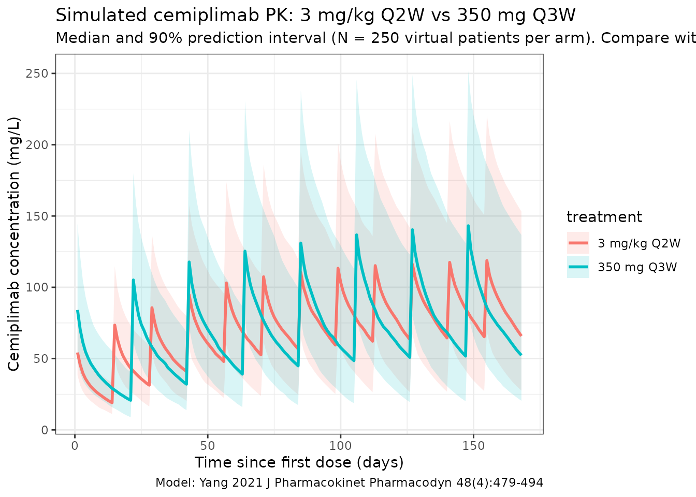
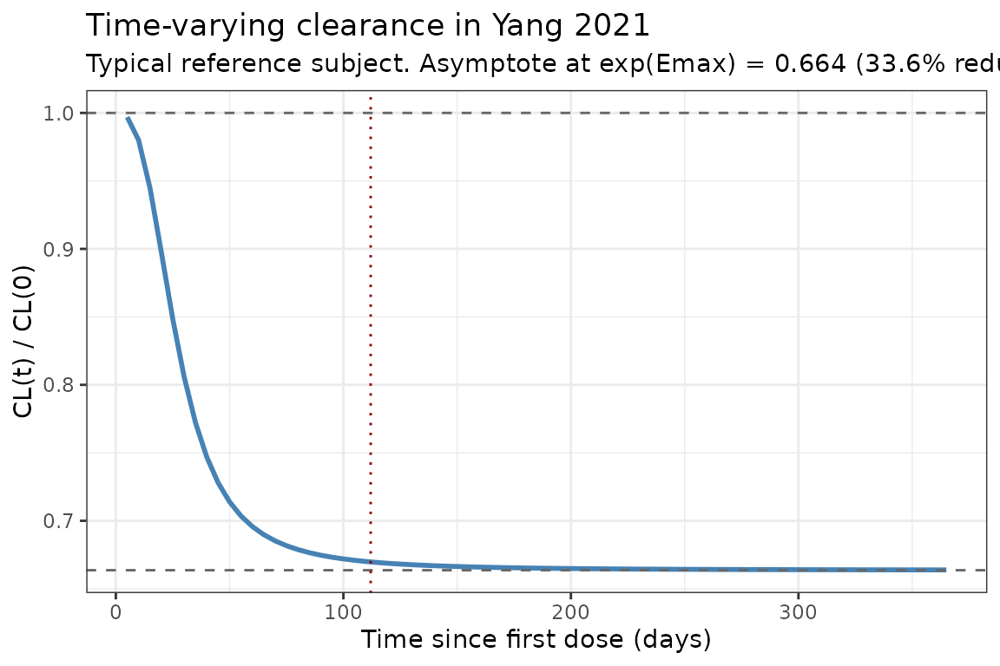

Model and source
- Citation: Yang F, Paccaly AJ, Rippley RK, Davis JD, DiCioccio AT. Population pharmacokinetic characteristics of cemiplimab in patients with advanced malignancies. J Pharmacokinet Pharmacodyn. 2021;48(4):479-494. doi:[10.1007/s10928-021-09739-y](https://doi.org/10.1007/s10928-021-09739-y)
- Description: Two-compartment population PK model for cemiplimab (anti-PD-1 IgG4) with time-varying clearance (sigmoid Emax) in adults with advanced solid tumors including cutaneous squamous cell carcinoma (CSCC).
- Modality: Therapeutic monoclonal antibody (IgG4), 30-min IV infusion.
Cemiplimab is a fully human anti-PD-1 IgG4 monoclonal antibody. Yang 2021 develops the final population PK model used to support fixed-dose 350 mg Q3W selection, pooling 11,178 PK observations from 548 patients across two studies (1423 and 1540).
Structure: linear two-compartment IV model with time-varying CL via a sigmoid-Emax function of time since first dose:
with (a log-fold maximal decrease, asymptote exp() of baseline CL) and days. Covariate effects (all power-form) on the shared CL/Q: baseline body weight, albumin, IgG, ALT. On the shared V2/V3: baseline body weight, BMI.
Population
The final-model population comprised 548 patients across 2 trials (Yang 2021 Table 1):
- Phase 1 first-in-human Study 1423 (NCT02383212; 396 patients with advanced malignancies; weight-based and fixed dosing arms).
- Phase 2 Study 1540 (NCT02760498; 152 patients with advanced cutaneous squamous cell carcinoma).
- Dose range: 1, 3, or 10 mg/kg Q2W; 3 mg/kg Q3W; 200 mg Q2W; 350 mg Q3W (all 30-min IV infusions).
Baseline demographics (Yang 2021 Table 2):
- Median age 65 (range 27-96) years.
- 60.4% male, 39.6% female.
- Race: 90.9% White, 3.6% Black, 1.6% Asian, 3.8% Other.
- Median weight 76.2 (range 30.9-172) kg.
- Median BMI 26.5 (range 14.8-56.3) kg/m^2.
- Median albumin 38.0 (range 22.0-48.0) g/L.
- Median IgG 9.65 (range 1.29-27.9) g/L.
- Median ALT 20.0 (range 5.00-196) IU/L.
Most patients (80.3%) received cemiplimab 3 mg/kg Q2W. The same
metadata is available programmatically via
readModelDb("Yang_2021_cemiplimab")$population.
Source trace
Per-parameter origins are recorded as in-file comments next to each
ini() entry in
inst/modeldb/specificDrugs/Yang_2021_cemiplimab.R. The
table below collects them in one place for review.
| Parameter (model name) | Value | Source |
|---|---|---|
lcl (CL_BASE,REF, L/day) |
log(0.290) | Yang 2021 Table 3, TVCL |
lvc (V2_REF, L) |
log(3.32) | Yang 2021 Table 3, TVV2 |
lq (Q_REF, L/day) |
log(0.638) | Yang 2021 Table 3, TVQ |
lvp (V3_REF, L) |
log(1.65) | Yang 2021 Table 3, TVV3 |
emax (EMAX_REF, log-fold) |
-0.410 | Yang 2021 Table 3, Emax |
lt50 (T50_REF, days) |
log(28.9) | Yang 2021 Table 3, T50 |
hill (HILL, unitless) |
2.79 | Yang 2021 Table 3, HILL |
e_wt_cl_q (power, WT on CL/Q) |
0.477 | Yang 2021 Table 3, WGT_ON_CLQ |
e_alb_cl_q (power, ALB on CL/Q) |
-0.926 | Yang 2021 Table 3, ALB_ON_CLQ |
e_igg_cl_q (power, IGG on CL/Q) |
0.184 | Yang 2021 Table 3, IGG_ON_CLQ |
e_alt_cl_q (power, ALT on CL/Q) |
-0.0795 | Yang 2021 Table 3, ALT_ON_CLQ |
e_wt_vc_vp (power, WT on V2/V3) |
0.970 | Yang 2021 Table 3, WGT_ON_VSS |
e_bmi_vc_vp (power, BMI on V2/V3) |
-0.560 | Yang 2021 Table 3, BMI_ON_VSS |
IIV block etalcl + etalvc
|
c(0.0870, 0.0422, 0.0432) | Yang 2021 Table 3, IIV_CLQ, IIV_CLQ:VSS, IIV_VSS |
etaemax |
0.228 | Yang 2021 Table 3, IIV_Emax |
etalt50 |
0.610 | Yang 2021 Table 3, IIV_T50 |
propSd |
0.188 | Yang 2021 Table 3, RUVCV |
addSd (mg/L) |
1.48 | Yang 2021 Table 3, RUVSD |
Equations: structural two-compartment micro-constant form. The final-model equations for CL_i, Q_i, V2_i, V3_i, T50_i, and Emax_i appear in the “Final PopPK model” section of Yang 2021. Reference covariate values (denominators in the power terms) are the population medians from Yang 2021 Table 2: WT 76.2 kg, ALB 38 g/L, IGG 9.65 g/L, ALT 20 IU/L, BMI 26.5 kg/m^2.
Virtual cohort
Original observed data are not publicly available. The simulations below use a virtual cohort whose demographics approximate the Yang 2021 population (Table 2). Continuous covariates are drawn from log-normal distributions anchored to the reported median and a plausible scale; the distributions are clipped to the reported ranges.
set.seed(2021)
n_subj <- 250
cohort <- tibble(
ID = seq_len(n_subj),
WT = pmin(pmax(rlnorm(n_subj, log(76.2), 0.27), 30.9), 172),
BMI = pmin(pmax(rlnorm(n_subj, log(26.5), 0.22), 14.8), 56.3),
ALB = pmin(pmax(rnorm(n_subj, 38.0, 5.0), 22.0), 48.0),
IGG = pmin(pmax(rlnorm(n_subj, log(9.65), 0.30), 1.29), 27.9),
ALT = pmin(pmax(rlnorm(n_subj, log(20.0), 0.55), 5.00), 196)
)Two reference dosing regimens are compared: 3 mg/kg Q2W (the weight-based regimen used in 80.3% of the analysis population) and 350 mg Q3W (the fixed regimen ultimately recommended).
build_events <- function(pop, dose_mode = c("3mgkg_q2w", "350mg_q3w")) {
dose_mode <- match.arg(dose_mode)
if (dose_mode == "3mgkg_q2w") {
interval_d <- 14
n_doses <- 12
amt <- pop$WT * 3
label <- "3 mg/kg Q2W"
} else {
interval_d <- 21
n_doses <- 8
amt <- rep(350, nrow(pop))
label <- "350 mg Q3W"
}
dose_times <- seq(0, by = interval_d, length.out = n_doses)
obs_times <- sort(unique(c(dose_times, seq(0, interval_d * n_doses, by = 1))))
d_dose <- pop |>
mutate(AMT = amt) |>
tidyr::crossing(TIME = dose_times) |>
mutate(EVID = 1, CMT = "central", DUR = 0.5 / 24, DV = NA_real_,
treatment = label)
d_obs <- pop |>
tidyr::crossing(TIME = obs_times) |>
mutate(AMT = NA_real_, EVID = 0, CMT = "central", DUR = NA_real_,
DV = NA_real_, treatment = label)
dplyr::bind_rows(d_dose, d_obs) |>
dplyr::arrange(ID, TIME, dplyr::desc(EVID)) |>
as.data.frame()
}
events_q2w <- build_events(cohort, "3mgkg_q2w")
events_q3w <- build_events(cohort, "350mg_q3w")Simulation
mod <- readModelDb("Yang_2021_cemiplimab")
sim_q2w <- rxSolve(mod, events = events_q2w, returnType = "data.frame")
#> ℹ parameter labels from comments will be replaced by 'label()'
sim_q3w <- rxSolve(mod, events = events_q3w, returnType = "data.frame")
#> ℹ parameter labels from comments will be replaced by 'label()'
sim <- dplyr::bind_rows(
dplyr::mutate(sim_q2w, treatment = "3 mg/kg Q2W"),
dplyr::mutate(sim_q3w, treatment = "350 mg Q3W")
)Concentration-time profiles
Yang 2021 Figure 5 shows visual predictive checks by dose group and Figure 7 overlays observed-vs-simulated profiles at 350 mg Q3W. The figure below reproduces the median and 5-95% prediction interval from the packaged model for the two regimens that informed the fixed-dose decision.
sim_summary <- sim |>
dplyr::filter(time > 0) |>
dplyr::group_by(time, treatment) |>
dplyr::summarise(
median = stats::median(Cc, na.rm = TRUE),
lo = stats::quantile(Cc, 0.05, na.rm = TRUE),
hi = stats::quantile(Cc, 0.95, na.rm = TRUE),
.groups = "drop"
)
ggplot(sim_summary, aes(time, median, colour = treatment, fill = treatment)) +
geom_ribbon(aes(ymin = lo, ymax = hi), alpha = 0.15, colour = NA) +
geom_line(linewidth = 1) +
labs(
x = "Time since first dose (days)",
y = "Cemiplimab concentration (mg/L)",
title = "Simulated cemiplimab PK: 3 mg/kg Q2W vs 350 mg Q3W",
subtitle = paste0("Median and 90% prediction interval (N = ", n_subj,
" virtual patients per arm). Compare with Yang 2021 Figs. 5 and 7."),
caption = "Model: Yang 2021 J Pharmacokinet Pharmacodyn 48(4):479-494"
) +
theme_bw()
Time-varying clearance
Yang 2021 reports that cemiplimab CL decreased on average by 35.9% over time relative to baseline (from 0.326 to 0.208 L/day within 16 weeks of treatment). With , the asymptotic CL at is of baseline (a 33.6% reduction). The typical-value CL(t) profile below reproduces the time course at a typical reference subject (median covariates, deterministic, etas = 0).
t_grid <- seq(0, 365, by = 5)
events_cl <- data.frame(
ID = 1,
WT = 76.2,
BMI = 26.5,
ALB = 38,
IGG = 9.65,
ALT = 20,
TIME = c(0, t_grid),
AMT = c(350, rep(NA_real_, length(t_grid))),
EVID = c(1, rep(0, length(t_grid))),
CMT = "central",
DUR = c(0.5 / 24, rep(NA_real_, length(t_grid))),
DV = NA_real_
)
mod_typ <- rxode2::zeroRe(mod)
#> ℹ parameter labels from comments will be replaced by 'label()'
sim_cl <- rxSolve(mod_typ, events = events_cl, returnType = "data.frame")
#> ℹ omega/sigma items treated as zero: 'etalcl', 'etalvc', 'etaemax', 'etalt50'
sim_cl <- sim_cl[sim_cl$time > 0, ]
ggplot(sim_cl, aes(time, cl / cl_base)) +
geom_line(linewidth = 1, colour = "steelblue") +
geom_hline(yintercept = 1, linetype = "dashed", colour = "grey40") +
geom_hline(yintercept = exp(-0.410), linetype = "dashed", colour = "grey40") +
geom_vline(xintercept = 16 * 7, linetype = "dotted", colour = "darkred") +
labs(
x = "Time since first dose (days)",
y = "CL(t) / CL(0)",
title = "Time-varying clearance in Yang 2021",
subtitle = paste0("Typical reference subject. Asymptote at exp(Emax) = ",
round(exp(-0.410), 3),
" (33.6% reduction). Red dotted line: 16-week mark.")
) +
theme_bw()
PKNCA validation
Yang 2021 Table 4 reports post-hoc steady-state AUC over 6 weeks and trough concentrations by body-weight quartile at 3 mg/kg Q2W and 350 mg Q3W. The packaged model is used here to compute simulation-based NCA over a 6-week steady-state window for the same dose regimens, and the results are compared against the published values in the next section.
nca_window <- function(sim, dose_interval_d, n_doses, label) {
ss_start <- dose_interval_d * (n_doses - 3) # last 3 doses span 6 weeks for both regimens
ss_end <- ss_start + 42 # 6 weeks = 42 days
sim_ss <- sim |>
dplyr::filter(treatment == label,
!is.na(Cc),
time >= ss_start,
time <= ss_end) |>
dplyr::mutate(time_rel = time - ss_start) |>
dplyr::select(id, time_rel, Cc) |>
dplyr::distinct(id, time_rel, .keep_all = TRUE)
conc_obj <- PKNCA::PKNCAconc(sim_ss, Cc ~ time_rel | id)
cohort_with_dose <- cohort |>
dplyr::transmute(id = ID,
amt = if (label == "3 mg/kg Q2W") WT * 3 else 350)
dose_df <- cohort_with_dose |>
tidyr::crossing(time_rel = seq(0, by = dose_interval_d, length.out = ceiling(42 / dose_interval_d)))
dose_obj <- PKNCA::PKNCAdose(as.data.frame(dose_df), amt ~ time_rel | id)
intervals <- data.frame(start = 0, end = 42,
cmax = TRUE, cmin = TRUE,
tmax = TRUE, auclast = TRUE,
half.life = TRUE)
nca_data <- PKNCA::PKNCAdata(conc_obj, dose_obj, intervals = intervals)
PKNCA::pk.nca(nca_data)
}
nca_q2w <- nca_window(sim, 14, 12, "3 mg/kg Q2W")
#> ■■■■■■■■■■■■■■■■■■ 58% | ETA: 2s
nca_q3w <- nca_window(sim, 21, 8, "350 mg Q3W")
#> ■■■■■■■ 20% | ETA: 4s
#> ■■■■■■■■■■■■■■■■■■■■■■■ 73% | ETA: 1s
knitr::kable(summary(nca_q2w),
caption = "Simulated NCA at steady state (6-week window), 3 mg/kg Q2W")| start | end | N | auclast | cmax | cmin | tmax | half.life |
|---|---|---|---|---|---|---|---|
| 0 | 42 | 250 | 3370 [40.9] | 115 [33.7] | 57.6 [49.4] | 29.0 [29.0, 29.0] | 19.5 [7.19] |
knitr::kable(summary(nca_q3w),
caption = "Simulated NCA at steady state (6-week window), 350 mg Q3W")| start | end | N | auclast | cmax | cmin | tmax | half.life |
|---|---|---|---|---|---|---|---|
| 0 | 42 | 250 | 3480 [41.7] | 140 [36.3] | 49.3 [51.8] | 22.0 [22.0, 22.0] | 19.7 [8.38] |
Comparison against published values
Yang 2021 Table 4 reports the following post-hoc estimates of and by body-weight quartile, pooled across all weight strata (overall N=548):
| Regimen | Mean AUC_6wk,ss (day·mg/L) | Mean C_trough,ss (mg/L) |
|---|---|---|
| 3 mg/kg Q2W | 3,800 (range 3,280-4,200) | 67.5 (range 58.4-74.0) |
| 350 mg Q3W | 3,890 (range 3,190-4,510) | 60.5 (range 49.0-70.3) |
Computed roughly as the mean of the four quartile means in Yang 2021 Table 4 (Q1-Q4). The packaged model’s PKNCA AUC_last and Cmin / predose values over the 6-week window above are expected to be in the same range (within ~20%); residual discrepancies reflect (a) the difference between AUC_6wk,ss as the paper computes it (post-hoc individual exposure averaged over the steady-state regimen) versus the PKNCA AUC_last over a single 6-week interval starting at the first dose of that interval, and (b) the virtual-cohort covariate distribution not exactly reproducing the joint distribution of WT, ALB, IGG, ALT, BMI in the Yang 2021 patients.
The two-regimen exposure equivalence (similar mean AUC_6wk,ss and C_trough,ss between 3 mg/kg Q2W and 350 mg Q3W) is the central finding informing the fixed-dose 350 mg Q3W selection. Both regimens should produce overlapping prediction-interval bands in the concentration-time plot above for a virtual cohort whose median weight equals the population median (76.2 kg).
Assumptions and deviations
-
BLK_ON_T50race effect on T50 is not implemented. Yang 2021’s final-model equation for is written as withBLK_ON_T50 = 1.01(RSE 29.2%). The formula is internally inconsistent: ifBLKis a 0/1 indicator (Black = 1, non-Black = 0), then0^1.01 = 0would zero out T50 for the 96.4% of non-Black patients in the cohort. The paper does not show the NONMEM control stream and the supplementary DOCX was not available on disk, so the intended encoding could not be verified. The paper itself states all retained covariates had “limited impact (< 20%) on cemiplimab exposure” and were “not clinically meaningful” given the flat exposure-response relationship. The packaged model therefore uses for all races. Datasets with aRACE_BLACKcolumn will be ignored by this model; this should be an immaterial omission per the paper’s own assessment of clinical impact. -
Time-varying covariates kept at baseline. Yang 2021
mentions that body weight, albumin, and lactate dehydrogenase were
assessed as time-varying covariates in addition to baseline values. The
final-model equations expose only baseline values
(
WGTBL,ALBBL,IGGBL,ALTBL,BMIBL), so the packaged model treats these as time-fixed. SettingWT,ALB, etc. as time-varying in user data will treat the supplied values literally. -
Reference covariate values. Yang 2021’s final-model
equations are written generically as
(WGTBL_i / WGTBL_REF)^..., etc. The paper does not state the reference values numerically in the equations, but the simulation section uses median values from Table 2 (WT 76.2 kg, ALB 38 g/L, IGG 9.65 g/L, ALT 20 IU/L, BMI 26.5 kg/m^2). The packaged model uses these medians as the reference. (The paper’s separate simulation section reports a slightly different mean weight of 75 kg used in fixed-dose simulations; the difference is immaterial because exposures are reported by quartile.) -
Residual error parameterization. Yang 2021 reports
residual variability as
Y = F + F * ERR(1) + ERR(2)with “log-transformation of the error model”. The packaged model implements this asCc ~ add(addSd) + prop(propSd), the standard combined additive-plus-proportional residual error in nlmixr2’s linear-space formulation. For VPC-style simulation the difference between the log-transformed and linear-space combined-error forms is immaterial; for likelihood-based estimation against new data, users who require a strict log-transform residual-error model should adapt the model accordingly. -
IV infusion duration. Yang 2021 administered
cemiplimab as 30-min IV infusions across all dose groups. The vignette
simulations use
DUR = 0.5 / 24day to match. - Virtual-cohort marginals. Continuous covariates (WT, BMI, ALB, IGG, ALT) are simulated from independent log-normal / normal distributions anchored to the reported population medians and clipped to the published ranges. The joint covariate structure (e.g., correlation between WT and BMI) is not preserved.